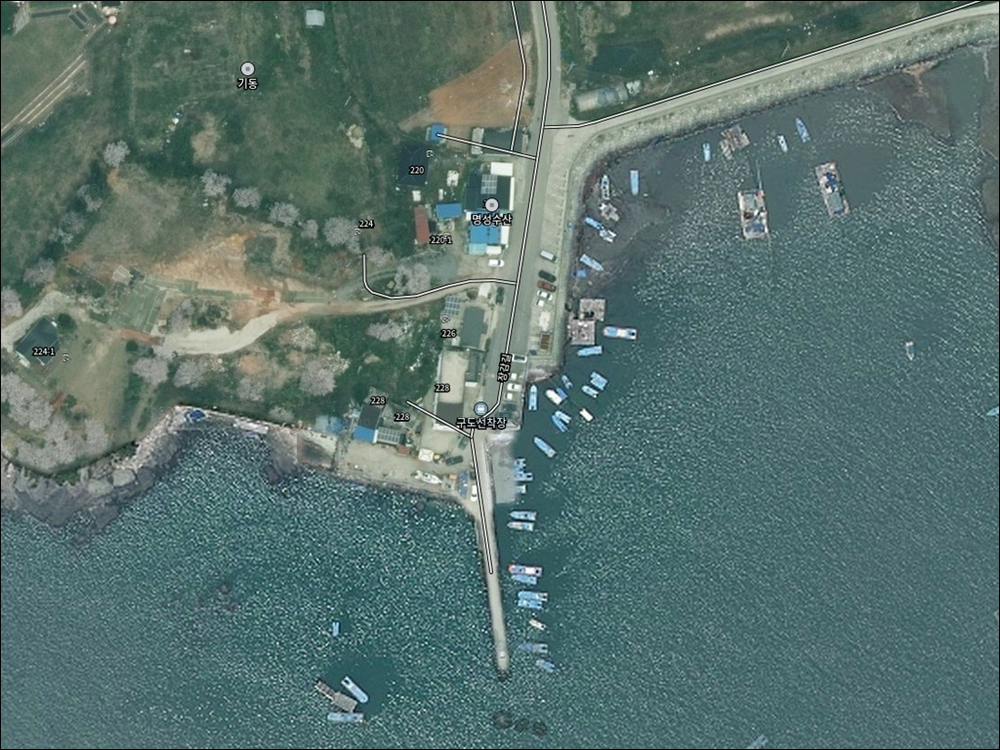
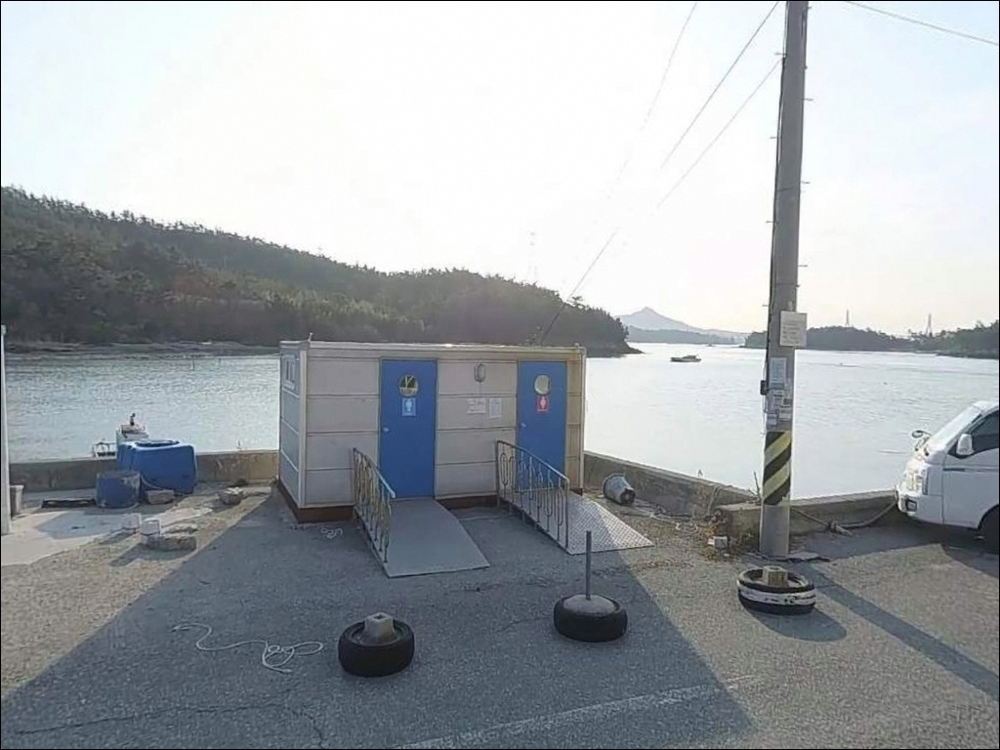
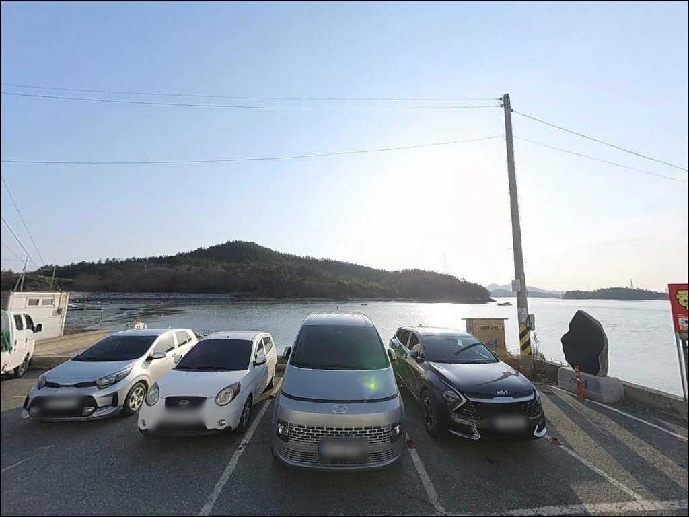
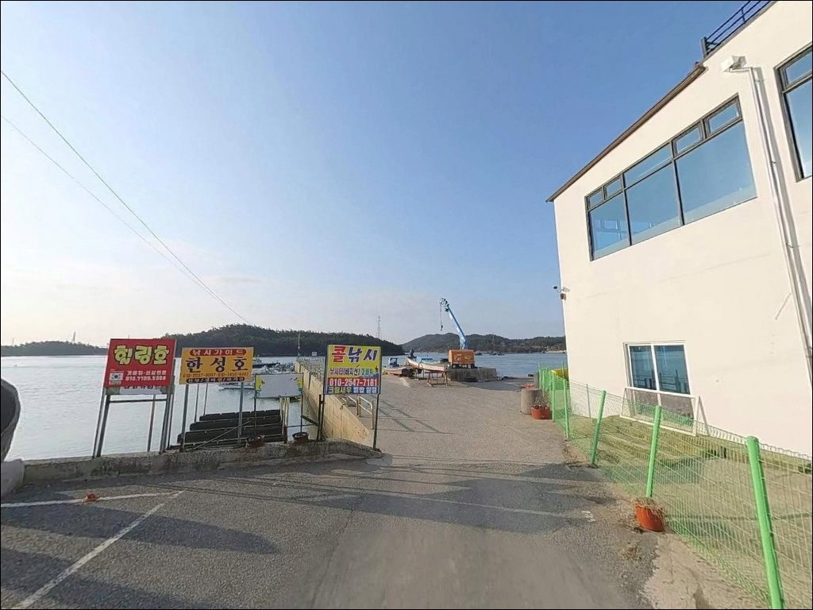
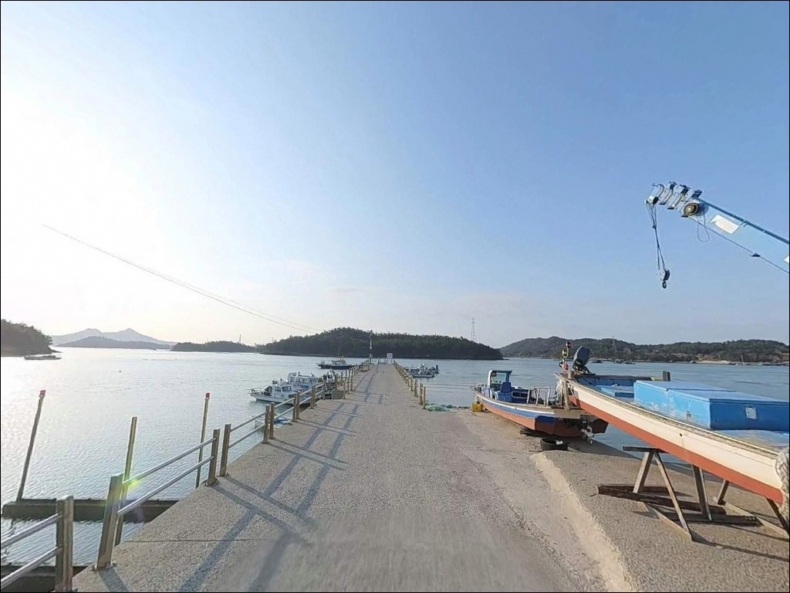
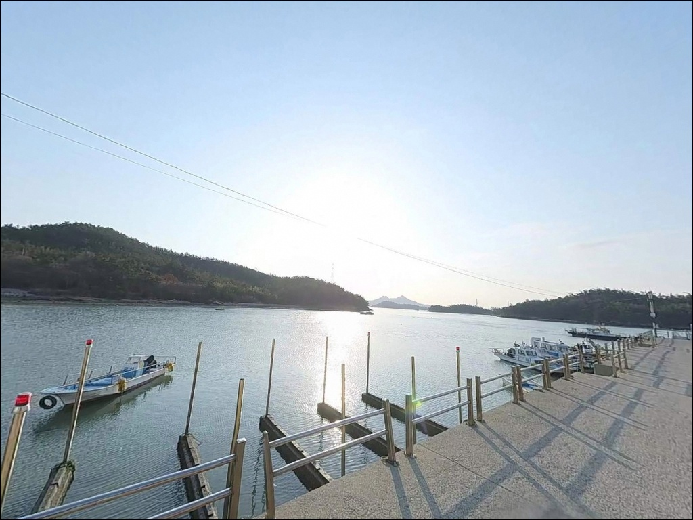
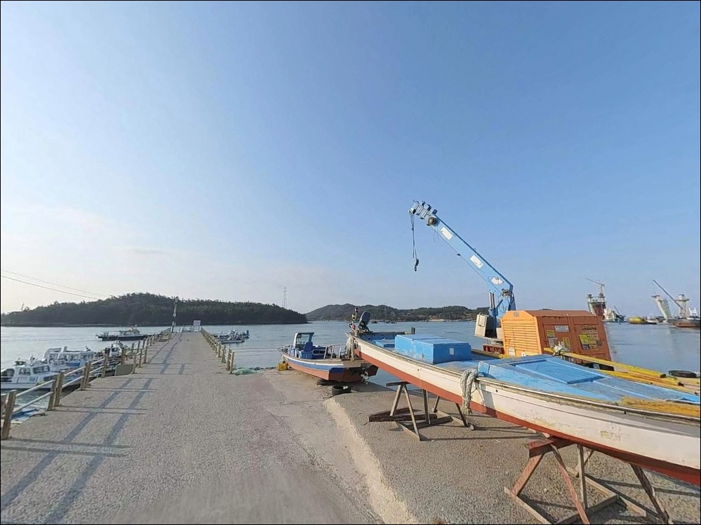
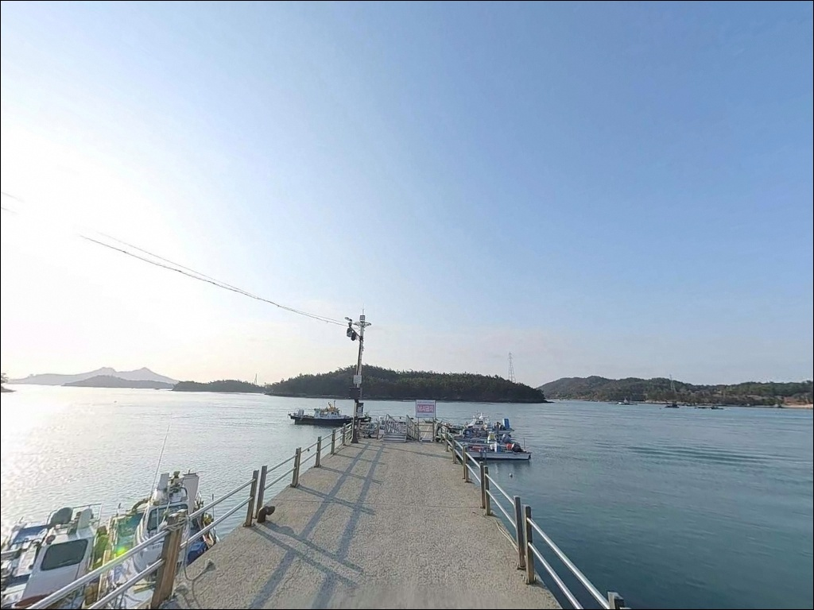
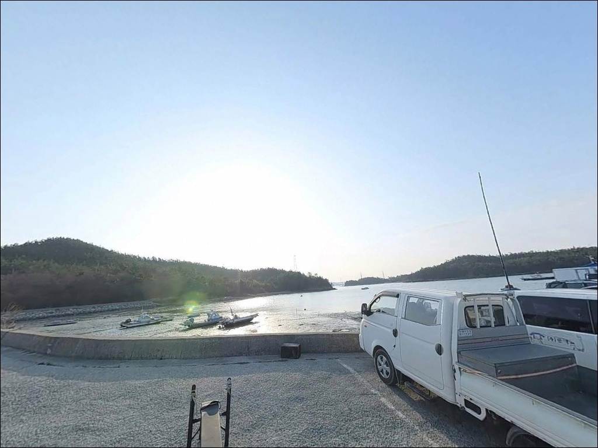

구도선착장, 전남 신안군 자연 그대로의 분위기에서 차박, 낚시를 즐기기 좋은 포인트
이 페이지에는 광고(제휴 링크 포함)가 있으며, 광고 링크를 통해 구매하면 운영자가 판매 수익 또는 수수료를 받을 수 있습니다. 포인트 사진: 카카오맵 스카이뷰·로드뷰. 이 페이지의 지도·사진 이미지는 카카오맵의 실제 서비스 이미지와 다를 수 있습니다.


포인트 안내
구도선착장
전남 신안군 압해읍 장감리 529-55
물때 확인 없이 압해도 뻘 지형 선착장에 내려서면
간조 시간대에는 선착장 주변 바닥이 드러나
어떤 채비를 던져도 낚시가 성립하지 않습니다.
서남해 내만형 구조의 선착장은
만조 전후 타이밍이 낚시 가능 여부를 가르는 기준이 됩니다.
구도선착장은 압해대교에서 이어지는 압해도 내부 도로를
따라 들어가는 장감리 끝자락에 위치한 소형 선착장입니다.
인근 용출도 방면 갯바위 접근과
원투·루어 탐색형 낚시 모두 가능한 환경이나,
아직 많이 알려지지 않은 포인트라
출조 전 현장 답사를 병행하는 방식이 어울립니다.
이 글은 구도선착장의 낚시 여건과
진입 환경, 차박 체류 조건에 집중합니다.
조황 단정이나 특정 어종 보장은
이 글의 범위에 포함되지 않습니다.

1. 포인트 위치 및 진입 동선 분석
압해도는 목포와 압해대교로 연결된 섬으로,
차량 진입 자체에는 큰 어려움이 없습니다.
구도선착장이 있는 장감리는 압해도 동쪽 끝자락에 해당하며,
압해대교에서 섬 내부 도로를 따라 진입하는 구조입니다.
포장도로 위주이나 선착장 말단부로 갈수록 도로 폭이 좁아지는
농어촌 마을도로 구간이 포함됩니다.
대형 SUV나 캠핑 장비를 갖춘 차량이라면
출발 전 위성지도로 진입로를 미리 확인하는 편이 안전합니다.
선착장 앞 공터에서 소형 차량 기준 회차는 가능한 수준이나,
어선 접안 구역과 겹치지 않는 자리를
현장에서 먼저 확인해야 합니다.
주차는 선착장 접안부 인근 공터 또는
마을 진입로변 갓길을 활용하는 방식이 일반적입니다.
어민 작업 동선을 방해하지 않는 자리가 우선이며,
주차 공간이 좁아 선착장 내 혼잡할 경우
마을 초입에서 도보 진입을 검토하는 편이 낫습니다.

2. 차박 환경 평가 및 야간 체류 여건
장감리는 소규모 어촌 마을 구조로
민가 밀집도가 높지 않은 편입니다.
야간에는 차량 통행이 거의 없어
조용한 체류 환경은 어느 정도 기대할 수 있는
수준입니다.
다만 가로등이 제한적인 환경이라
개인 조명 장비는 반드시 챙겨야 합니다.
서남해 내만형 구조라 외해에 직접 노출되는 정도는 낮고,
파도나 강한 바람 영향이 상대적으로 덜한 편입니다.
낚시를 마치고 하룻밤 머무는 차박 용도로는
분위기 자체는 나쁘지 않으나,
선착장 앞 주차 공간이 좁아
차박을 메인 목적으로 삼기에는 한계가 있습니다.
차박이란 차량을 숙박 공간으로 활용하며
현장에서 하룻밤 머무는 여행 방식입니다.
어선 조업 시간대에 선착장 공터를 점거하지 않도록
주차 위치는 현장에서 신중하게 결정해야 합니다.


3. 주변 편의시설 및 인프라 현황
구도선착장 반경 3km 이내에서
편의점이나 식당을 기대하기 어렵습니다.
장감리 소규모 어촌 마을 특성상
완전 자급 체제로 진입하는 것이
현실적인 준비 방식입니다.
식수, 얼음, 낚시 소품, 연료 모두
출발 전 갖춰야 합니다.
압해대교를 건너 목포 시내로 이동하면
24시간 편의점과 대형마트 이용이 가능합니다.
압해대교 기점에서 목포 시내까지
차량으로 10~15분 수준이라,
부족한 소품이 있다면
목포 방면 동선을 출발 전 미리 계획해두는 편이 효율적입니다.
응급 상황을 대비해
출발 전 연료·비상약품·여분 채비 준비는 철저히 갖추는 것이 기본입니다.
압해읍 소재지 방면에 보건지소와 파출소가 위치해 있어
긴급 상황 시 활용할 수 있는 구조입니다.

4. 간조 전에 도착하면 낚시 자리가 사라지는 이유
구도선착장 방문 전 가장 먼저 확인할 것은
물때입니다.
물때란 하루 두 차례 반복되는 밀물과 썰물의 주기를 말하며,
서남해 뻘 지형 선착장에서는
물때가 낚시 가능 여부 자체를 결정합니다.
간조 시 선착장 주변 바닥이 드러나는 뻘 지형 특성상,
만조 전후 1~2시간을 타이밍으로 맞춰 출발하는 것이
이 포인트 방문의 기본 판단 기준입니다.
바다타임에서 압해도 기준 물때표를 확인하고
만조 시각에 역산해 출발 시각을 정하는 방식이 권장됩니다.
서남해 일대는 조석 간만의 차가 크기 때문에
같은 날이라도 시간대에 따라 낚시 여건이 크게 달라집니다.
선착장 구조물 끝단에서 채비를 운용할 때는
구명조끼를 반드시 착용해야 합니다.
암초지대가 포함된 주변 갯바위로 이동 시에도
발판 미끄럼에 대비한 안전화 착용이 기본 매너입니다.
야간 낚시 시에는 헤드랜턴을 필히 지참합니다.

5. 지형 기반 낚시 여건 분석
구도선착장 일대는 뻘 지형이 넓게 분포한
서남해 내만형 구조입니다.
장감리가 압해도 동쪽 끝자락에 위치해
목포 방면 수로와 인접한 구역에 해당하며,
이 일대 해안은 물골(조류가 흐르는 수로 구간)이 산재한
전형적인 서남해 만 구조의 환경입니다.
선착장 끝단으로 갈수록 수심이 깊어지는 경향이 있으며,
만조 시 약 3~5m 안팎의 수심이 형성되는 구조입니다.
선착장 측면은 완만한 수심 변화 구간이 이어지고,
내만형 구조 특성상 강한 파도 영향은
외해 직접 노출 지형보다 적은 편입니다.
다만 수로 방향으로 조류가 흐르는 타이밍에는
원투 채비가 밀려 컨트롤이 어려울 수 있습니다.
선착장 주변 석축과 발판 구조는
붕장어나 숭어류가 서식하기 좋은 환경을 갖추고 있습니다.
인근 용출도 방면 갯바위 구간으로 이동하면
감성돔 찌낚시나 루어 공략도 가능한 지형 조건이 갖춰집니다.
출조 전 구도선착장 일대 최신 조황은
직접 검색해 보시기 바랍니다.


6. 포인트에 적합한 낚시 스타일 제안
이 포인트 지형에서 가장 무난한 낚시는
원투낚시입니다.
원투낚시란 무게 있는 봉돌을 달아
멀리 캐스팅해 바닥층을 공략하는 낚시 방식입니다.
수로 물골 방향으로 청갯지렁이나 홍갯지렁이 미끄를 달아
만조 전후에 던져놓는 방식으로,
붕장어나 도다리류를 노리기에
이 지형 조건과 잘 맞는 스타일입니다.
루어낚시도 시도해볼 만한 방식입니다.
물이 들어오는 만조 시점에
소형 지그헤드나 가벼운 웜 채비로
선착장 구조물 주변을 천천히 탐색하는 방식이 어울립니다.
계절에 따라 농어나 갑오징어류가
수로 입구 방향으로 붙을 가능성이 있습니다.
민장대나 찌낚시도 내만형 구조에서
적합한 낚시 방식입니다.
선착장 석축이나 발판이 안정적인 구간에서
숭어를 노리는 방식으로 운용하기 좋고,
인근 용출도 갯바위 방면으로 이동한다면
가을 시즌 감성돔 릴찌낚시도 병행할 수 있는
지형 조건이 형성됩니다.

7. 대안 포인트 및 플랜 B 동선
구도선착장 조황이 기대에 못 미치거나
주차 여건이 여의치 않을 때는
송공 선착장이 첫 번째 대안입니다.
압해도 남서쪽에 위치한 송공 선착장은
압해도 권역에서 상대적으로 알려진 낚시 접안지로,
다양한 낚시 스타일 운용이 가능한 구조입니다.
압해도 복룡리 선착장과 가룡항도
규모가 더 크고 진입과 주차 여건이
구도선착장보다 안정적입니다.
처음 압해도를 찾는다면
이 포인트들을 기점으로 삼고
구도선착장을 병행 탐색하는 동선이
효율적입니다.
가란대교 앞 선착장도 현지 원투낚시 포인트로
알려진 곳입니다.
같은 압해도 해안선 구조를 공유하는 포인트라
물때 조건이 비슷하게 적용되며,
에깅 시즌에 함께 묶어 돌아보기 좋은
대안 동선입니다.

만조 타이밍을 맞추면
구도선착장이 달라 보입니다
원투낚시나 루어 탐색형 낚시를 즐기는 낚시인이라면
구도선착장의 뻘 지형과 수로 구조는
만조 타이밍을 맞췄을 때
충분히 해볼 만한 환경을 갖추고 있습니다.
아직 온라인에 조황 정보가 많지 않은 포인트라
직접 발품을 팔아 탐색해두기 좋은 조용한 선착장이기도 합니다.
반면 물때 계산 없이 간조에 도착하거나,
편의시설을 기대하고 자급 준비 없이 방문하면
낚시 자체가 불가능해지는 상황을 맞닥뜨릴 수 있습니다.
만조 타이밍 확인, 완전 자급 준비, 진입로 사전 점검,
이 세 가지를 갖추고 간다면
조용하고 한적한 포인트로 기억에 남을 수 있는 곳입니다.
편의시설 없는 압해도 뻘 마을 선착장에서
물 들어오는 타이밍에 채비를 던지고
차에서 하룻밤 머무는 낚시 차박 여행자라면,
서남해 특유의 고요한 분위기를 온전히 누릴 수 있는 선착장입니다.